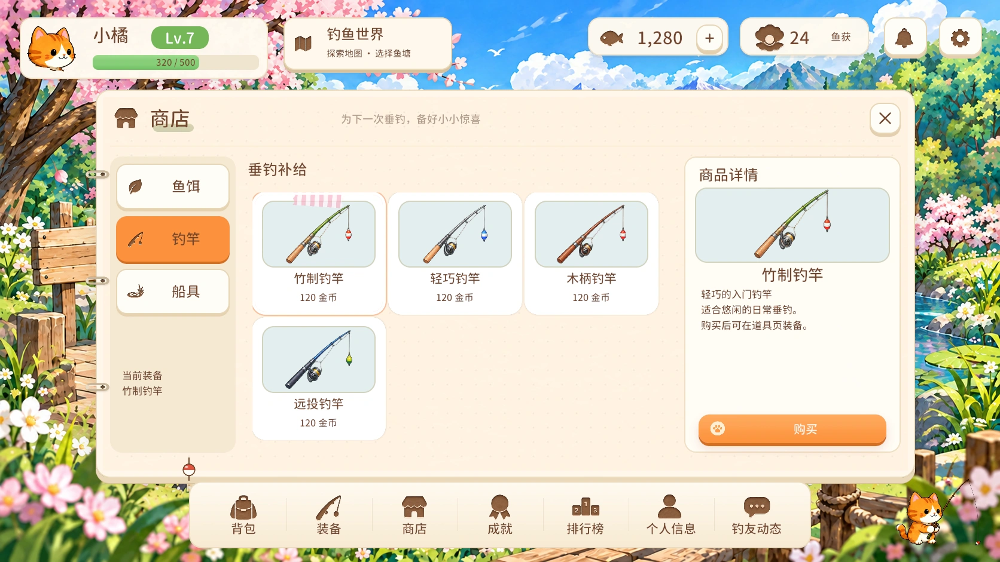

<!doctype html><html lang="zh-CN"><meta charset="utf-8"><meta name="viewport" content="width=device-width,initial-scale=1"><title>猫咪钓鱼手账 · Unity 正式页面</title><style>*{box-sizing:border-box}body{margin:0;background:#29241f;color:#f5e8d4;font:16px system-ui,sans-serif}header{padding:22px 28px 10px}h1{font-size:26px;font-weight:500;margin:0 0 10px}p{color:#c8b79e;line-height:1.7;margin:8px 0}a{color:#ffc987}nav{display:flex;gap:8px;flex-wrap:wrap;padding:14px 28px}button{font:inherit;padding:9px 14px;border:1px solid #73614d;border-radius:10px;background:#40372e;color:#e9dac3;cursor:pointer}button[aria-pressed=true]{background:#ffa051;border-color:#ffa051;color:#35271b}button:focus-visible,a:focus-visible{outline:3px solid #7bbcdf;outline-offset:3px}.viewer{margin:8px 16px 20px}img{display:block;width:100%;max-width:1672px;height:auto;margin:auto;border-radius:10px;background:#fff7e9}.full img{width:1672px;max-width:none}.full .viewer{overflow:auto}footer{padding:0 28px 28px;line-height:1.8;color:#c8b79e}.tools{display:flex;gap:16px;align-items:center;flex-wrap:wrap}small{font-size:13px}</style><header><h1>猫咪钓鱼手账 · Unity 正式页面</h1><p>正式预制体实际渲染 · 原生文字、按钮与滚动控件 · 1672 × 941</p><div class="tools"><a href="../../../design/ui/prototype/cozy-journal/index.html">查看原版交互预览 ↗</a><a href="../compare.html">参考样板对照</a><a href="evidence.json">验证记录</a><button id="fit">原尺寸查看</button></div></header><nav aria-label="选择页面"><button data-index="0" aria-pressed="true">商店</button><button data-index="1" aria-pressed="false">世界地图</button><button data-index="2" aria-pressed="false">选择鱼塘</button><button data-index="3" aria-pressed="false">背包</button><button data-index="4" aria-pressed="false">装备</button><button data-index="5" aria-pressed="false">成就</button><button data-index="6" aria-pressed="false">排行榜</button><button data-index="7" aria-pressed="false">个人资料</button><button data-index="8" aria-pressed="false">编辑资料</button><button data-index="9" aria-pressed="false">展示柜</button><button data-index="10" aria-pressed="false">图鉴</button><button data-index="11" aria-pressed="false">相册</button><button data-index="12" aria-pressed="false">钓友动态</button><button data-index="13" aria-pressed="false">发布鱼获</button><button data-index="14" aria-pressed="false">好友与聊天</button><button data-index="15" aria-pressed="false">设置</button><button data-index="16" aria-pressed="false">独立图鉴</button></nav><main class="viewer"></main><footer><strong id="caption">商店</strong><p>这些是正式 Unity 页面截图，业务内容使用编辑器样例数据；游戏内操作连接真实接口。此处支持切换截图，不模拟游戏按钮。← → 可切页。</p><small>自动检查：passed=347 failed=0 skipped=0；预制体构建守卫：PASS。Windows / Steam 联机与 DPI 待平台验收。</small></footer><script>const pages=[{"id":"PanelShop","title":"商店","file":"PanelShop.webp","source":"fish-social-unity/Library/CozyRedesignPreviews/PanelShop.png","sourceSha256":"a679a990e2eb40a1a0e4a4b8d825501cdb19a0d3c47df732b2c54a74c4446231"},{"id":"PanelWorldMap","title":"世界地图","file":"PanelWorldMap.webp","source":"fish-social-unity/Library/CozyRedesignPreviews/PanelWorldMap.png","sourceSha256":"cd7941e35bb23973824a943393373919b95ade9a2b4b46cb664aac678541a538"},{"id":"PanelPondSelection","title":"选择鱼塘","file":"PanelPondSelection.webp","source":"fish-social-unity/Library/CozyRedesignPreviews/PanelPondSelection.png","sourceSha256":"4d19d962a8d9c6594e32254397266e799dd6d52add7ed06831c015cf4ca03838"},{"id":"PanelCatch","title":"背包","file":"PanelCatch.webp","source":"fish-social-unity/Library/CozyRedesignPreviews/PanelCatch.png","sourceSha256":"79f21aaeb15d22443290c17a5887fc2ec25d305ba1474f04d60351b06fd8eb8f"},{"id":"PanelEquipment","title":"装备","file":"PanelEquipment.webp","source":"fish-social-unity/Library/CozyRedesignPreviews/PanelEquipment.png","sourceSha256":"95e780625416c4e2124a41dd40f6eee30e34d093d84e234279f05571ac62224a"},{"id":"PanelAchievements","title":"成就","file":"PanelAchievements.webp","source":"fish-social-unity/Library/CozyRedesignPreviews/PanelAchievements.png","sourceSha256":"c3d30d25aac45efc7b0b524de5ee5a7382a125e1db925cf895fd92d5749f57b2"},{"id":"PanelLeaderboard","title":"排行榜","file":"PanelLeaderboard.webp","source":"fish-social-unity/Library/CozyRedesignPreviews/PanelLeaderboard.png","sourceSha256":"560d6a20aa7c5854417d6dcb600164e2024bfc9804294301e9e8db1a8eeadd4f"},{"id":"PanelProfileHub","title":"个人资料","file":"PanelProfileHub.webp","source":"fish-social-unity/Library/CozyRedesignPreviews/PanelProfileHub.png","sourceSha256":"d26f918c239486343a32385712321fdd16104d0c620c2039b4a2d4e289155d1d"},{"id":"PanelProfileEdit","title":"编辑资料","file":"PanelProfileEdit.webp","source":"fish-social-unity/Library/CozyRedesignPreviews/PanelProfileEdit.png","sourceSha256":"1492ec66d36d5cb45c7003554a9bf40cd9223cffd3d46d9deabe125294f312c8"},{"id":"PanelProfileHub-展示柜","title":"展示柜","file":"PanelProfileHub-展示柜.webp","source":"fish-social-unity/Library/CozyRedesignPreviews/PanelProfileHub-展示柜.png","sourceSha256":"702c18938a461095b6bd07cac0b8b1d88c3d0d34ab39d2b4b56d9ff5df7039ff"},{"id":"PanelProfileHub-图鉴","title":"图鉴","file":"PanelProfileHub-图鉴.webp","source":"fish-social-unity/Library/CozyRedesignPreviews/PanelProfileHub-图鉴.png","sourceSha256":"fae988758fa93aa591f2f3ee6e319a01daafd240cdf672279e97421c3ae67c0c"},{"id":"PanelProfileHub-相册","title":"相册","file":"PanelProfileHub-相册.webp","source":"fish-social-unity/Library/CozyRedesignPreviews/PanelProfileHub-相册.png","sourceSha256":"109d91ad2ae99e61ed0f1a0c2f1aad91e2343802d1da02ac0cdc306699f260e5"},{"id":"PanelSocialFeed","title":"钓友动态","file":"PanelSocialFeed.webp","source":"fish-social-unity/Library/CozyRedesignPreviews/PanelSocialFeed.png","sourceSha256":"c66ef197b6d2b57b4e9e6aaac9e7964d7144b8be1c624435a31d7ae709829d40"},{"id":"PanelSocialFeed-发布","title":"发布鱼获","file":"PanelSocialFeed-发布.webp","source":"fish-social-unity/Library/CozyRedesignPreviews/PanelSocialFeed-发布.png","sourceSha256":"8a29055b9afca4289f433c73304fce9fb27aabaa1cf4199d1c0b8d3f8aba9d2c"},{"id":"PanelSocial","title":"好友与聊天","file":"PanelSocial.webp","source":"fish-social-unity/Library/CozyRedesignPreviews/PanelSocial.png","sourceSha256":"cc6bb7df64d880a384dba015a1a40bcf7ebcdcc1544526c5fcf9ff999eb12e51"},{"id":"PanelSettings","title":"设置","file":"PanelSettings.webp","source":"fish-social-unity/Library/CozyRedesignPreviews/PanelSettings.png","sourceSha256":"80720700cd97b748e66bf1f46febe19ea4ed9af62a6ff9cac7e3146c784596a4"},{"id":"PanelGallery","title":"独立图鉴","file":"PanelGallery.webp","source":"fish-social-unity/Library/CozyRedesignPreviews/PanelGallery.png","sourceSha256":"709a31387bf7436d91ed3c856545b19e2e934c6572f0d7c4b489a86f1f821a71"}],buttons=[...document.querySelectorAll('[data-index]')];let selected=0;function show(i){selected=(i+pages.length)%pages.length;const p=pages[selected];document.getElementById('preview').src=p.file;document.getElementById('preview').alt=p.title+' · Unity正式页面';document.getElementById('caption').textContent=p.title;buttons.forEach((b,j)=>b.setAttribute('aria-pressed',j===selected));history.replaceState(null,'','#'+encodeURIComponent(p.id))}buttons.forEach((b,i)=>b.onclick=()=>show(i));document.getElementById('fit').onclick=()=>{document.body.classList.toggle('full');document.getElementById('fit').textContent=document.body.classList.contains('full')?'适应窗口':'原尺寸查看'};document.addEventListener('keydown',e=>{if(e.key==='ArrowRight')show(selected+1);if(e.key==='ArrowLeft')show(selected-1)});const initial=pages.findIndex(p=>p.id===decodeURIComponent(location.hash.slice(1)));if(initial>=0)show(initial);</script></html>